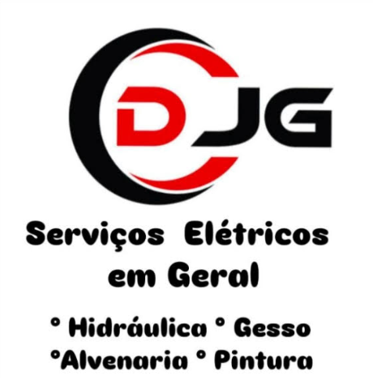

Sobre o Profissional
Nome:David Junior Canhin Gomes
Idade:43 Anos
Profissão: Autônomo – Manutenções em gerais, com especialização em serviços elétricos residenciais e prediais.
David iniciou sua trajetória ao se interessar pela manutenção elétrica enquanto trabalhava em um estacionamento. Desde então, se especializou em cursos técnicos, e oferecendo serviços de qualidade e confiança.